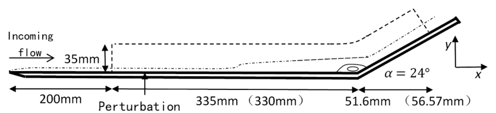
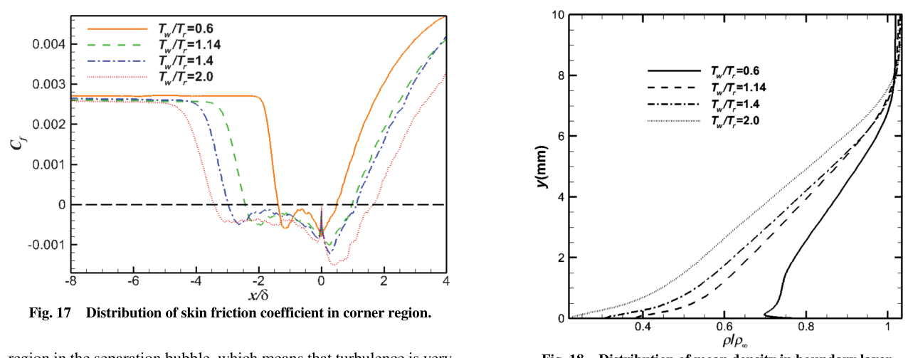
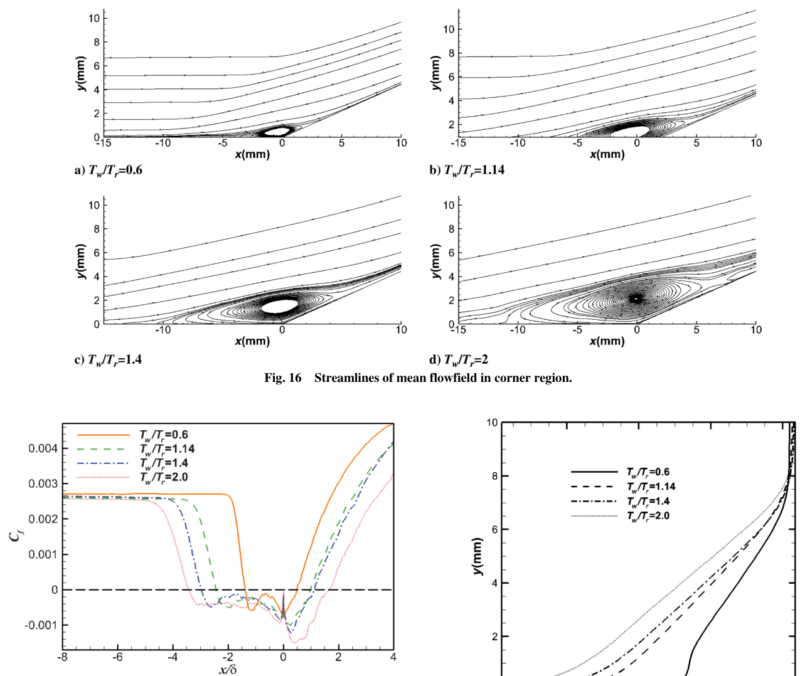
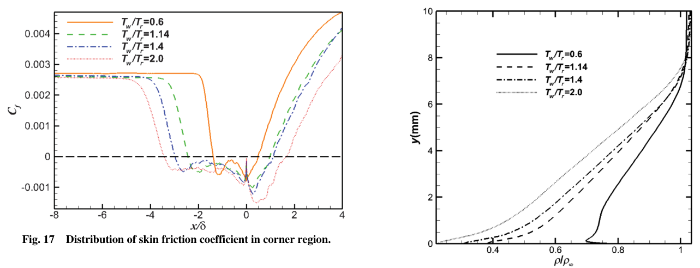

01中文摘要
数值研究壁温对马赫2.9、24°压缩拐角激波/湍流边界层干扰分离泡尺寸的影响，壁温与恢复温度之比取0.6、1.14、1.4和2.0。Tw/Tr=1.14工况与Bookey实验对比验证良好。结果表明分离泡尺寸随壁温升高显著增大；通过理论分析与数值结果给出半理论公式 L/δ ∝ (Tw/Tr)^0.85。湍动能收支分析显示湍流生成主要位于缓冲层和激波附近，耗散主要位于分离泡中心和近壁区；各工况内在压缩性效应不显著。
02阅读说明
10 页 AIAA Journal Article in Advance（2017，DOI 10.2514/1.J054939），数值模拟（隐式 LES/有效 DNS）加半理论分析。bundle 10 页全文完整，Table 1、2、4 与图注可读；另用 PDF 第6、9页核对 TKE 定义式(1)-(2)、表3 及半理论式(3)-(9)。Fig. 3、4、9、12、13、20 不在抓图清单中，未使用；Fig. 20（L/δ 随 Tw/Tr）仅依据正文与 PDF 第9页图注描述。OCR 在 Re∞ 与 1.4 工况壁温上有前后不一致，已列入待确认项。 文章类型：期刊
03一句话核心与三句话摘要
24°压缩拐角 M2.9 湍流干扰中，壁温升高使分离泡显著增大，半理论给出 L/δ∝(Tw/Tr)^0.85。
- 问题与缺口：壁温对压缩拐角湍流激波/边界层干扰（STBLI）分离泡尺寸的影响研究不足，而风洞来流总温与飞行条件差异很大，需要可外推的壁温标度。 AI概括
- 方法与发现：对 24°压缩拐角、M∞=2.9、Re∞=5581.4/mm 的四组壁温 Tw/Tr=0.6、1.14、1.4、2.0 做隐式 LES，得到 L/δ 由 1.87 单调增至 5.09，并拟合出 L/δ=2.9(Tw/Tr)^0.85。 AI概括
- 结论：壁温主要通过改变近壁平均密度与黏度（实际雷诺数）影响分离泡；内禀压缩性效应可忽略；半理论式与本文、Priebe & Martín 及 Spaid & Frishett 20°实验数据吻合。 AI概括
04核心内容清单
| 要点 | 类型 | 重要性 | 原文依据 | 属性 |
|---|---|---|---|---|
| 研究对象为 24°压缩拐角、M∞=2.9、Re∞=5581.4/mm 的湍流 SBLI，四组壁温比 Tw/Tr=0.6、1.14、1.4、2.0。 | 研究目标/工况 | A | p1 摘要；p2 表2 | 原文明确 |
| 采用 OpenCFD-SC 隐式 LES（无数理湍流模型，数值耗散作亚网格模型），WENO-SYMBO 四阶无黏通量、八阶中心黏性项、三阶 TVD-RK 时间推进。 | 数值方法 | A | p4；p6 | 原文明确 |
| Tw/Tr=1.14 工况与 Bookey 等实验参数一致，用作验证；壁面压力、Cf、van Driest 速度剖面均与理论/实验/DNS 吻合。 | 验证 | A | p4-5；图6、图8、图9；表2 | 原文明确 |
| 分离泡长度随壁温单调增大：L/δ 从 1.87（Tw/Tr=0.6）增至 3.42、4.09、5.09（Tw/Tr=1.14、1.4、2.0）。 | 核心结果 | A | p8 表4；图17 | 原文明确 |
| 分离点随壁温升高向上游移动（xs/δ 从 -1.38 到 -3.60），再附点向下游移动（xr/δ 从 0.49 到 1.49）。 | 核心结果 | A | p8 表4 | 原文明确 |
| 半理论公式 L/δ∝(Tw/Tr)^0.85，24°拟合为 L/δ=2.9(Tw/Tr)^0.85，20° Spaid & Frishett 数据为 1.28(Tw/Tr)^0.85。 | 理论模型 | A | p9 式(9)；图20、图21 | 原文明确 |
| 机制为壁温改变近壁平均密度与黏度，从而改变实际雷诺数与分离泡质量流量；密度随壁温降低而升高、黏性随壁温升高而增大。 | 机制 | A | p8-9；图18、图19；式(3)-(7) | 原文明确 |
| 内禀压缩性效应不显著：压力膨胀项 Π 仅激波附近略大，膨胀耗散项 εd 在所有区域可忽略。 | 机制/结论 | A | p7-8；图14、图15 | 原文明确 |
| 平板区湍动能产生项在缓冲层达峰、耗散在近壁达峰；分离泡内产生项出现边界层内与激波附近双峰，高产生/高耗散区显著扩大。 | 湍流统计 | A | p7；图14、图15 | 原文明确 |
| 随壁温升高转捩推迟，原因是近壁密度与黏度定义的实际雷诺数降低。 | 现象/机制 | B | p5；图10 | 原文明确 |
| 瞬时温度在分离泡内出现峰值，且分离泡可分裂为一串小泡；冷壁工况相干结构团簇更多。 | 流动可视化 | B | p5-6；图11、图12 | 原文明确 |
| 展向 14 mm 计算域足够：加倍到 28 mm 后分离泡尺寸仅差约 1.5%（冷壁）与 5%（热壁）。 | 数值验证 | B | p5；图3 | 原文明确 |
05引言：研究问题与领域缺口
引言把 SBLI 置于高超声速飞行器与超燃冲压发动机气动设计的背景中，指出该问题研究六十余年仍未解决。已有工作包括 Marini 对层流干扰（SLBLI）的壁温/ ramp 角/Mach 数实验与经验公式、John 与 Kulkarni 的数值评估、Jaunet 等在反射激波 STBLI 中 Tw/Tr=1、1.4、1.9 的实验、Spaid 与 Frishett 在 M2.9 压缩拐角上的壁温实验，以及 Adams、Wu 与 Martín、Li 等的 DNS。作者据此指出：实验普遍显示壁温越高分离泡越大，但压缩拐角 STBLI 的壁温效应研究仍不充分，尤其缺少把壁温与分离泡长度联系起来的定量标度。本文目标是：在 24°压缩拐角、M∞=2.9、Re∞=5581.4/mm 下模拟四种壁温，先以 Tw/Tr=1.14 工况对 Bookey 等实验做验证，再分析分离泡长度并提出半理论公式，同时分析湍动能收支（p1 摘要与引言）。
06流动条件与几何构型
| 项目 | 数值/描述 | 依据 | 备注 |
|---|---|---|---|
| 共同来流条件 | M∞=2.9；Re∞=5581.4/mm；T∞=108.1 K；理想气体；Sutherland 黏性定律 | p2 表2；p4 | p1 引言写 Re=5881.4/mm，与表2 的 5581.4/mm 不一致，见待确认项 |
| 几何构型 | 24°压缩拐角；平板前缘下游 200 mm 为计算域入口；拐角在 x=0；流向 -330≤x≤56.57 mm（Tw/Tr=0.6）或 -335≤x≤51.6 mm（其余）；法向 35 mm；展向 0≤z≤14 mm | p2；图1 | 二维平均流假设，展向有限宽 |
| 工况1 Tw/Tr=0.6（冷壁） | Tw=162.2 K；δ=6.43 mm；δ*=1.7 mm；θ=0.5 mm；Δt=0.005；网格 3000×200×200 | p2 表1、表2 | Δt 的量纲文中未注明 |
| 工况2 Tw/Tr=1.14（验证工况） | Tw=307.0 K；δ=6.75 mm；δ*=2.15 mm；θ=0.425 mm；Δt=0.008；网格 2160×160×140 | p2 表1、表2 | 与 Bookey 等实验参数一致 |
| 工况3 Tw/Tr=1.4 | Tw=378.4 K（表2）；δ=6.8 mm；δ*=2.33 mm；θ=0.41 mm；Δt=0.008；网格 2160×160×140 | p2 表1、表2 | p4 正文写壁温 374 K，与表2 的 378.4 K 有 4.4 K 差异 |
| 工况4 Tw/Tr=2.0（热壁） | Tw=540.5 K；δ=6.95 mm；δ*=2.69 mm；θ=0.38 mm；Δt=0.01；网格 2160×160×140 | p2 表1、表2 | 壁温最高、边界层最厚 |
| Bookey 等实验对照 | M∞=2.9；Re∞=5581.4/mm；T∞=108.1 K；Tw=307.0 K；δ=6.7 mm；δ*=2.36 mm；θ=0.43 mm | p2 表2 | 仅用于 Tw/Tr=1.14 验证 |
| 恢复温度定义 | Tr=T∞[1+r(γ-1)M∞²/2]，温度恢复系数 r=0.89；Tr 数值文中未直接给出 | p2 | 四组 Tw/Tr 由该定义换算 |
| 转捩触发 | 壁面吹吸扰动，-305≤x≤-285 mm，幅值 A=0.1；五频率 f0、2f0、3f0、4f0、5f0，f0=0.1（约 96 kHz）；bypass 型转捩 | p4 | 入口为平板层流剖面 |
| 边界层状态 | 来流平板边界层经 bypass 转捩后为充分发展湍流；拐角上游干扰区为湍流边界层 | p4-5；图8、图10 | Cf 在 x≈-200 mm 急升、x≈-250 mm 达峰 |
| 统计与时间推进 | CFL=0.1–0.2；总时间步 233,000–365,000；10,000–14,000 步达统计定常；每 100 步取样，1000 样本 | p4、p6-7 | 1000 与 2000 样本对比后选 1000 |
| 计算平台 | 天津国家超算中心天河-1，240 CPU 核；热壁工况约 2.05–2.2 s/步，冷壁约 5.5 s/步 | p4 | 冷壁网格量更大 |
| 展向域敏感性 | 14 mm 与 28 mm 对比：分离泡尺寸差约 1.5%（Tw/Tr=0.6）、约 5%（Tw/Tr=2.0） | p5；图3 | 热壁对展向域更敏感，因分离泡与边界层更厚 |
07核心现象与关键参数
| 参数 | 定义 | 数值 | 关系/说明 | 依据 |
|---|---|---|---|---|
| Tw/Tr | 壁温与恢复温度之比，表征壁面热条件 | 0.6、1.14、1.4、2.0 | 增大使分离泡增大；半理论 L/δ∝(Tw/Tr)^0.85 | p2；p9 |
| Tr | 恢复温度，Tr=T∞[1+r(γ-1)M∞²/2]，r=0.89 | 文中未给数值，仅给定义式 | 作为壁温归一化基准 | p2 |
| δ | 拐角上游边界层厚度 | 6.43、6.75、6.8、6.95 mm（对应 Tw/Tr=0.6、1.14、1.4、2.0） | L、xs、xr 的长度归一化尺度 | p2 表2 |
| δ* | 边界层位移厚度 | 1.7、2.15、2.33、2.69 mm | 随壁温升高而增大 | p2 表2 |
| θ | 边界层动量厚度 | 0.5、0.425、0.41、0.38 mm | 随壁温升高而减小 | p2 表2 |
| L/δ | 分离泡长度（分离点到再附点）以 δ 归一 | 1.87、3.42、4.09、5.09 | 随 Tw/Tr 单调增大；拟合 2.9(Tw/Tr)^0.85（24°） | p8 表4；p9 式(9) |
| xs/δ，xr/δ | 分离点与再附点的流向位置，以 δ 归一；Cf 第一个零点为分离点、第二个零点为再附点 | xs/δ=-1.38、-2.44、-2.79、-3.60；xr/δ=0.49、0.98、1.12、1.49 | L/δ=xr/δ-xs/δ | p8 表4；图17 |
| Rew | 用混合来流与壁面值定义的实际雷诺数，Rew=ρw u∞ L∞/μw，L∞ 取 1 mm | 各工况未直接列数值；随 Tw 升高按 Rew∝Tw^-1.7 减小 | 假设 L/δ∝1/√Rew | p9 式(3)、(6)、(7) |
| Cf | 壁面摩阻系数 | 拐角区负值区长度即分离泡长度；具体峰值文中未列表 | 第一个零点定分离点、第二个零点定再附点 | p5、p8；图8、图17 |
| P、ε、Π、εd | 湍动能产生项、耗散项、压力膨胀项、膨胀耗散项 | 图中以壁面单位归一化分布给出；Π 仅激波附近显著，εd 全区域可忽略 | Π、εd 表征内禀压缩性效应 | p6-8 表3；图14、图15 |
| 网格尺度 | 流向 Δx+、第一层 Δyw、边界层边缘 Δy/δ、展向 Δz+ | Tw/Tr=0.6：10.6/5.84、0.58、15.02、8.07；1.14：6.20/4.26、0.49、10.17、4.86；1.4：4.80/3.33、0.38、7.88、3.78；2.0：3.12/2.07、0.24、5.19、2.44 | 以 x=-50 mm 处壁面单位归一；Δx+ 分 x=-50 mm 前/后两值 | p2 表1 |
08方法与数据
几何与 Bookey 等实验相同：超声速平板后接 24°压缩拐角，拐角位于 x=0，计算域入口在平板前缘下游 200 mm，入口施加平板层流剖面；展向 0≤z≤14 mm，法向 35 mm，流向对最冷工况为 -330≤x≤56.57 mm、其余为 -335≤x≤51.6 mm（p2）。来流 M∞=2.9、Re∞=5581.4/mm、T∞=108.1 K；壁温 162.2、307、378.4（正文另处写 374）、540.5 K，对应 Tw/Tr=0.6、1.14、1.4、2.0，恢复温度按 Tr=T∞[1+r(γ-1)M∞²/2]、r=0.89 定义（p2）。采用 OpenCFD-SC 求解曲线坐标 Navier-Stokes，不设湍流模型，数值耗散充当亚网格模型，故称为隐式 LES 或有效 DNS；无黏项用 Steger-Warming 分裂与四阶带宽优化 WENO-SYMBO，黏性项八阶中心格式，三阶 TVD Runge-Kutta 时间推进，CFL=0.1–0.2，总时间步 233,000–365,000，统计前迭代 10,000–14,000 步，每 100 步取样，用 1000 个样本统计（p4、p6-7）。网格：冷壁工况 3000×200×200，其余 2160×160×140，拐角区加密，第一层网格 Δyw=0.24–0.58、边界层边缘 Δy/δ=5.19–15.02（表1，p2）。转捩由 -305≤x≤-285 mm 壁面吹吸扰动触发，幅值 A=0.1，含 f0、2f0、3f0、4f0、5f0 五个频率，无量纲基频 f0=0.1（约 96 kHz），为 bypass 型转捩（p4）。验证包括：展向域加倍后分离泡尺寸差约 1.5%（冷壁）与 5%（热壁）；两点相关在 z>3 mm 后落在 -0.1~0.1；van Driest 速度符合 u+=2.44log y++5.1；Cf 与理论值、壁面压力与 Bookey 实验及 Wu & Martín DNS 对比（p4-5）。
| 项目 | 内容 | 依据 | 备注 |
|---|---|---|---|
| 研究类型 | 数值模拟（隐式 LES/有效 DNS）加半理论标度分析 | p1、p4 | 非实验、非 RANS |
| 求解器 | OpenCFD-SC，MPI-Fortran 90，曲线坐标 Navier-Stokes | p4 | 本课题组开发 |
| 湍流处理 | 不设湍流模型，数值耗散充当亚网格尺度模型，故称隐式 LES 或有效 DNS | p4 | 分辨率接近 DNS |
| 空间离散 | 无黏项 Steger-Warming 分裂 + 四阶带宽优化 WENO-SYMBO；黏性项八阶中心格式 | p4 | WENO-SYMBO 取自 Wu & Martín、Martín 等 |
| 时间推进 | 三阶 TVD 型 Runge-Kutta；CFL=0.1–0.2 | p4 | 总步数 233,000–365,000 |
| 网格 | 冷壁 3000×200×200；其余 2160×160×140；拐角区流向加密；第一层 Δyw=0.24–0.58 | p2 表1；图2 | 冷壁实际雷诺数更高故用更多网格点 |
| 入口/出口边界 | 入口位于平板前缘下游 200 mm，施加平板层流剖面 | p2 | 出口条件文中未提及 |
| 转捩方法 | 壁面吹吸扰动触发 bypass 转捩，A=0.1，五频率，f0≈96 kHz | p4 | 与 Bookey 实验转捩方式可能不同 |
| 气体模型 | 完全气体；Sutherland 定律计算黏性 | p4 | 未考虑真实气体效应 |
| 统计方法 | 10,000–14,000 步达统计定常后每 100 步取样，1000 样本；1000 与 2000 样本对比验证收敛 | p4、p6-7；图13 | 图13 显示两套样本曲线几乎重合 |
| 验证1：展向域 | 14 mm 与 28 mm 对比，分离泡差 1.5%（冷壁）、5%（热壁）；两点相关在 z>3 mm 后为 -0.1~0.1 | p5；图3-图5 | 判定展向域足够 |
| 验证2：速度剖面 | van Driest 变换速度符合 u+=2.44log y++5.1，常数 C=5.1 与 Wu & Martín 一致 | p5；图6 | Tw/Tr=1.14 |
| 验证3：能谱 | 展向 TKE 谱在约四个数量级内呈 -5/3 斜率，惯性子区存在但不太长 | p5；图7 | y+=232（约 0.7δ） |
| 验证4：Cf 与壁面压力 | Cf 与理论公式（文献17、21）吻合；pw/p∞ 与 Bookey 实验（5% 误差棒）及 Wu & Martín DNS 吻合，平台下游略高 | p5；图8、图9 | 差异归因于网格分布与转捩方式 |
| 不确定度/重复性 | 数值研究未给实验不确定度；统计收敛以 1000/2000 样本对比代替 | p6-7 | 实验对照误差棒取 5% |
09核心推导与公式
把壁温对分离泡长度的影响归结为近壁平均密度与黏度改变所导致的“实际雷诺数”变化：用完全气体与边界层内近似常压把壁面密度写成 1/Tw，用黏性幂律把黏度写成 Tw^0.7，得到 Rew∝Tw^-1.7；再假设湍流分离长度按 1/√Rew 标度，合并即得 L/δ∝(Tw/Tr)^0.85，最后用数值与实验数据拟合比例系数。
关键假设
- 固定 ramp 角（24°）与固定来流 Mach 数，分离泡尺寸仅由实际雷诺数 Rew 决定（p9）
- 边界层内压力近似不变（Prandtl 边界层理论），完全气体状态方程 p=ρRT 成立，故 ρw∝1/Tw（p9）
- 空气黏性系数按幂律 μ∝T^0.7 近似（p9，引文[24]）
- 湍流情形下分离泡长度随上游雷诺数按 L/δ∝1/√Rew 变化，此式为作者假设而非推导（p9）
- 恢复温度 Tr 在固定来流条件下为常数（p9）
- 内禀压缩性效应可忽略，故不是分离泡增大的主因（p7-9）
- 来流速度 u∞ 与参考长度 L∞（取 1 mm）为常数（p9）
推导过程
作者不用自由来流雷诺数，而用混合自由来流速度与壁面密度、黏度定义“实际雷诺数”，以体现壁温通过近壁物性对分离泡的作用。L∞ 取 1 mm 作为参考长度。
由 Prandtl 边界层理论，边界层内压力近似不变；结合完全气体状态方程 p=ρRT，壁面密度与壁温成反比。这一步把热边界条件转化为密度条件。
空气黏性系数随温度按 0.7 次幂增长，采用文献中的幂律近似；该指数是经验值，不是由分子运动论推导。
把密度与黏度标度代入 Rew 定义，u∞ 与 L∞ 为常数，得到 Rew 与 Tw 的 -1.7 次幂关系。壁温越高，实际雷诺数越低。
作者假设湍流分离泡长度以边界层厚度归一后随上游雷诺数的平方根成反比。原文用“We assume”明确这是假设；其后图20 与 Priebe & Martín 数据吻合被作为该假设合理的旁证。
将式(6)代入式(7)，Rew 的 -1/2 次幂给出 Tw 的 0.85 次幂，即分离泡长度正比于壁温的 0.85 次方。
固定来流下恢复温度 Tr 为常数，可把绝对壁温换成壁温比而不改变幂次。作者进一步用数值与实验数据拟合比例系数：24°拐角为 2.9，Spaid & Frishett 的 20°拐角实验为 1.28；角度更小、分离更短，故系数更小。
适用边界：式(7)是未经证明的假设，0.85 指数完全继承自 μ∝T^0.7 与平方根标度；比例系数依赖 ramp 角与几何，不能跨角度直接外推；推导只用壁面物性，不含转捩位置、分离泡非定常性、激波结构与三维效应；假设完全气体与边界层内常压，未验证更高 Mach 数、真实气体或强冷壁（Tw/Tr<0.6）情形；四组工况均为湍流边界层，不适用于层流分离。
10结果：主要发现与关键证据
分离泡随壁温升高显著增大：Table 4 给出 Tw/Tr=0.6、1.14、1.4、2.0 时 xs/δ=-1.38、-2.44、-2.79、-3.60，xr/δ=0.49、0.98、1.12、1.49，L/δ=1.87、3.42、4.09、5.09（p8，表4；图17）。图16 的平均流线直观显示分离区随壁温扩张，图11 的瞬时温度场显示分离泡内出现温度峰值，且瞬时分离区可表现为一串小泡而非单一的大泡（p5）。图10 显示随壁温升高转捩推迟，作者归因于近壁密度与黏度定义的实际雷诺数下降（p5）。图12 的 Q 等值面显示冷壁工况相干结构团簇更多、热壁更少，激波下游比上游更混乱（p6）。图8 的 Cf 在 Tw/Tr=1.14 下于 x≈-200 mm 急升标志转捩、x≈-250 mm 达峰，x≈-30 mm 后转负标志分离，拐角下游 x>0 迅速恢复正值标志再附，理论值三角符号吻合（p5）。图9 壁面压力与 Bookey 实验（误差棒 5%）及 Wu & Martín DNS 吻合，压力平台下游略高，作者归因于网格分布与转捩方式不同（p5）。TKE 收支：平板区产生项 P 在缓冲层达峰、耗散项 ε 在近壁达峰，压力膨胀项 Π 与膨胀耗散项 εd 在四工况均很小；分离泡内 P 出现双峰（边界层内与激波附近），高 P、高 ε 区间明显大于平板区，说明分离泡内湍动能产生与耗散都更强（图14、15，p7-8）。
| 发现 | 证据 | 证据类型 | 强度 | 位置 | 属性 |
|---|---|---|---|---|---|
| 分离泡长度随壁温升高显著、单调增大，L/δ 从 1.87 增至 5.09。 | 表4：Tw/Tr=0.6、1.14、1.4、2.0 对应 L/δ=1.87、3.42、4.09、5.09；图17 的 Cf 负值区随之变长。 | 定量结果 | 强 | p8 表4；图17 | 原文明确 |
| 壁温升高使分离点前移、再附点后移，二者共同造成分离泡扩张。 | 表4：xs/δ 由 -1.38 变为 -3.60，xr/δ 由 0.49 变为 1.49。 | 定量结果 | 强 | p8 表4 | 原文明确 |
| 半理论公式 L/δ=2.9(Tw/Tr)^0.85 能预测本文数值数据及 Priebe & Martín 的同类工况。 | 图20：实线为式(9)，圆点为本文结果，三角为 Priebe & Martín 数据，均落在线上；正文称 good predictive ability。 | 理论-数据对比 | 强 | p9；图20 | 原文明确 |
| 同一 0.85 幂次、系数改为 1.28 后，可较好预测 Spaid & Frishett 20°、M2.9 实验的分离距离。 | 图21：实验数据点与 L/δ=1.28(Tw/Tr)^0.85 直线吻合。 | 实验验证 | 中 | p9；图21 | 原文明确 |
| 壁温效应主要通过改变近壁密度与黏性系数（实际雷诺数）实现，而非内禀压缩性。 | 图18 密度随壁温降低而升高；图19 黏性随壁温升高而增大；图14、15 中 Π 仅激波附近略大、εd 可忽略。 | 机制证据 | 强 | p7-9；图14、图15、图18、图19 | 原文明确 |
| 平板区湍动能产生在缓冲层达峰、耗散在近壁达峰；分离泡内产生项出现双峰且高产生/高耗散区扩大。 | 图14（平板区）与图15（分离泡）的四项分布；正文明确描述双峰分别位于边界层内与激波附近。 | 湍流统计 | 强 | p7；图14、图15 | 原文明确 |
| 随壁温升高转捩推迟。 | 图10 瞬时温度场显示转捩位置随 Tw 增大而后移；正文归因于近壁密度与黏度定义的实际雷诺数降低。 | 现象 | 中 | p5；图10 | 原文明确 |
| 分离泡内出现温度峰值，且瞬时分离区可表现为一串小泡而非单一稳定大泡。 | 图11 的瞬时温度等值线与 u=0 轮廓线；正文明确描述。 | 流动可视化 | 中 | p5；图11 | 原文明确 |
| 冷壁工况的上游湍流边界层中相干结构团簇多于热壁工况，激波下游结构更混乱。 | 图12 的 Q 不变量等值面，对比 Tw/Tr=0.6 与 1.4。 | 流动可视化 | 弱 | p6；图12 | 原文明确 |
| Tw/Tr=1.14 工况的壁面压力、Cf 与速度剖面和实验/DNS/理论一致，验证了数值方法。 | 图9 与 Bookey 实验（5% 误差棒）及 Wu & Martín DNS 对比；图8 Cf 与理论值对比；图6 van Driest 剖面符合对数律。 | 数值验证 | 强 | p5；图6、图8、图9 | 原文明确 |
11机制解释与论证链
壁温通过近壁平均物性而非内禀压缩性起作用。降低壁温使近壁密度显著升高（图18），同时使黏性系数减小（图19）；二者共同提高以壁面值定义的实际雷诺数 Rew。作者明确认为密度变化会改变分离泡的质量流量，进而影响分离泡尺寸；Rew 越低，对应分离泡越长。TKE 收支给出旁证：分离泡内产生项 P 出现边界层内与激波附近双峰，高 P、高 ε 区域远大于平板区，说明分离区湍流活动更强、需要更长的流向距离完成能量产生-耗散平衡。压力膨胀项 Π 只在激波附近略显著、膨胀耗散项 εd 全区域可忽略，故内禀压缩性不是壁温效应的主因。【AI概括，依据 p7-9、图14-19】
12讨论：结论、贡献与局限
作者先排除内禀压缩性作为主因：Π 仅在激波附近略显著、εd 在所有区域可忽略，因此压缩性不是分离泡随壁温增大的主要原因（p7-8）。随后提出机制：壁温改变近壁平均密度与黏度，进而改变分离泡内的质量流量与雷诺数。图18 显示近壁密度随壁温降低而明显升高，图19 显示黏性系数随壁温升高而增大，尤其在近壁区（p8-9）。据此定义混合来流/壁面值的实际雷诺数 Rew=ρw u∞ L∞/μw，并在固定 ramp 角与 Mach 数下假设分离泡尺寸由 Rew 决定；由完全气体、边界层内压力近似不变得 ρw∝1/Tw，由 μ∝T^0.7 得 Rew∝1/Tw^1.7，再假设湍流分离长度 L/δ∝1/√Rew，合并得 L/δ∝Tw^0.85，归一化后为 L/δ∝(Tw/Tr)^0.85（p9，式3-9）。拟合系数对 24°为 2.9，对 Spaid & Frishett 20°数据为 1.28，作者认为角度更小、分离更短，故系数更小（图20、21，p9）。作者承认推导中的式(7)是假设，图20 与 Priebe & Martín 数据吻合被视为该假设正确的旁证（p9）。局限包括：单一 ramp 角与 Mach 数、四组壁温、理想气体与 Sutherland 黏性、DNS 成本限制的展向域与样本数，以及未讨论壁温对转捩位置与低频非定常性的耦合。
作者结论
在 24°压缩拐角、M∞=2.9、Re∞=5581.4/mm 下对 Tw/Tr=0.6、1.14、1.4、2.0 四组壁温做隐式 LES，得到：壁温对分离泡尺寸有直接影响，L/δ 随壁温升高由 1.87 增至 5.09；壁温主要通过改变近壁密度与黏度（实际雷诺数 Rew）起作用；由 Rew∝Tw^-1.7 与 L/δ∝Rew^-1/2 推得 L/δ∝(Tw/Tr)^0.85，24°拟合系数 2.9、20°实验系数 1.28，均与数据吻合；所研究工况中内禀压缩性效应不显著。作者据此认为该半理论式可用于由风洞壁温条件外推飞行条件下的分离泡长度。
主要贡献
- 给出四组壁温下 24°压缩拐角 STBLI 的高分辨率隐式 LES 数据库，并用 Bookey 实验、Wu & Martín DNS 与理论 Cf 完成验证。
- 定量建立 L/δ 与 Tw/Tr 的单调关系（1.87→5.09）。
- 提出并验证半理论标度 L/δ∝(Tw/Tr)^0.85，给出 24°（2.9）与 20°（1.28）两个系数。
- 通过 TKE 收支排除内禀压缩性作为主因，并把机制归因于近壁密度/黏度导致的 Rew 变化。
- 给出分离泡内 TKE 产生双峰、高产生/高耗散区扩大的湍流统计证据。
局限与未解决问题
仅一个 ramp 角（24°）、一个 Mach 数（2.9）与四组壁温，未覆盖其他角度、Mach 数、真实气体或强激波；半理论式的 0.85 指数继承自 μ∝T^0.7 与 1/√Rew 假设，后者原文明确为假设、未经独立验证；比例系数依赖几何，不能跨角度外推；转捩由人工吹吸触发，与实验转捩方式不同，可能影响分离泡绝对长度；展向域 14 mm 对热壁工况的敏感性约 5%；统计仅 1000 样本；未分析壁温对低频非定常性、分离泡三维结构及壁面热流的影响；表2 与正文在 Re∞、Tw(1.4) 上有不一致，需回原文核对。
13对高速流动与工程的意义
对高超声速风洞试验数据外推与热防护设计有直接意义：若已知来流与壁温，可用 L/δ≈2.9(Tw/Tr)^0.85 快速估计 24°压缩拐角湍流分离泡长度，或用 1.28 系数估计 20°构型；冷壁风洞会低估飞行热壁条件下的分离区，反之热壁试验会高估。方法上，把壁温效应压缩为近壁 Rew 的标度，可用于快速评估不同壁温下的隔离器/进气道压缩面分离风险。不能回答非定常分离、低频激波振荡、真实气体、强三维或层流分离问题；系数是否随 Mach 数、Re 与 ramp 角系统变化，文中未给出。【AI推断，基于原文公式与结论】
14核心图件




15可引用原文素材
| 原文短句 | 可支持的观点 | 位置 | 使用建议 |
|---|---|---|---|
| “the size increases significantly with the increase of wall temperature” | 分离泡随壁温升高显著增大 | p1 摘要 | 引用核心定性结论 |
| “L/δ ∝ (Tw/Tr)^0.85” | 半理论标度 | p1 摘要；p9 式(9) | 引用定量公式 |
| “the intrinsic compressibility effect is not significant in all these cases” | 内禀压缩性不是主因 | p1 摘要；p7-8 | 排除压缩性机制 |
| “the separation bubble is not always observed as one large bubble” | 瞬时分离区可分裂为多个小泡 | p5 | 描述瞬时流动结构 |
| “the turbulent production term reaches its peak in the buffer layer” | 平板区 TKE 产生峰值位于缓冲层 | p7 | 引用 TKE 收支结论 |
| “temperature peaks in the separation bubble” | 分离泡内出现温度峰值 | p5 | 描述热环境特征 |
| “wall temperature appears to affect the size of separation bubble mainly by changing the near-wall density and viscosity” | 壁温通过近壁密度/黏度起作用 | p10 结论 | 引用机制结论 |
| “the transition is postponed with the increase of the wall temperature” | 壁温升高使转捩推迟 | p5 | 引用转捩趋势 |
16最终核验
| 核验项 | 结论 |
|---|---|
| 仅基于全文 | 是。仅使用 bundle 的 10 页全文、图注与表1/2/4，并用 PDF 第6、9页核对式(1)-(2)、表3 及式(3)-(9)；未引入外部知识或外部数据。 |
| A 级要点有依据 | 是。A 级要点均有页码/表/图/公式支撑：四组工况（p1、表2）、隐式 LES 方法（p4）、验证（图6/8/9）、L/δ=1.87–5.09（表4）、xs/xr（表4）、半理论式(9)（p9、图20/21）、机制（图18/19）、压缩性可忽略（图14/15）。 |
| 属性标注 | 是。原文明确、AI概括、AI推断逐条标注；机制段与工程意义末注明属性。 |
| 覆盖范围 | bundle 589 行、10 页全文读完（PAGE 1-10 至参考文献结束）；PDF 核对第6、9页共 2 页；使用抓图清单中的图1、16、17、18，未使用清单外图件。 |
| 无编造 | 是。未编造页码、图号、公式或数据；Fig. 20 不在抓图清单，仅据正文与 PDF 图注描述，未列为 figures；Tr 数值、出口边界、Cf 峰值等未给处写“文中未给/未提及”；Re∞ 与 Tw 的前后不一致如实列入 open_questions。 |
需回原文确认
- p1 引言写 Re∞=5881.4/mm，而表2 与 p4 写 5581.4/mm，哪一个正确需回原文确认。
- p2 表2 中 Tw/Tr=1.4 的壁温为 378.4 K，p4 正文写 374 K，相差 4.4 K，需确认。
- 半理论式(7) L/δ∝1/√Rew 的物理依据仅称“假设”，是否对层流/湍流分离都成立、指数 1/2 是否随 Re 范围变化，文中未讨论。
- 比例系数 2.9 与 1.28 是否随 Mach 数、Re 与 ramp 角系统变化，文中只给两个角度，无法判断。
- 表2 的 Δt 列量纲未注明（无量纲时间步还是有量纲秒），需回原文或代码说明确认。
- 转捩由人工吹吸触发，其位置与 Bookey 实验是否一致、对分离泡绝对长度影响多大，文中未定量说明。
- 图9 中本文压力平台下游略高于 Wu & Martín DNS，作者归因于网格与转捩方式，但未做进一步甄别。
- 展向 14 mm 对热壁工况带来约 5% 的分离泡尺寸差异，是否影响 L/δ 拟合系数 2.9 的精度，文中未评估。
17关联文献
依据标签、板块、构型与作者脉络自动关联，可据此追踪同一问题的前序与后续工作。
18引用格式
选择期刊风格后复制；出处保留原刊名。BibTeX 可直接用于 LaTeX。
引用格式
Zhu, X. K., Yu, C. P., Tong, F. L. & Li, X. L. 2017 Numerical Study on Wall Temperature Effects on Shock Wave/Turbulent Boundary-Layer Interaction. AIAA Journal. https://doi.org/10.2514/1.J054939
PDF上传 PDF 并更新本页
本页缺少全文、摘要或图件时，可在浏览器本地补入 PDF。解析完全在本机完成，不上传网络；完成后会更新本页的 PDF 打开链接、原摘要、IMRaD 机器抽取、关键句与含图页面。复杂的公式语义与中文深度解读仍以原文和既有精读记录为准。
Zotero 笔记摘录
湍流SWBLI 得到L/δ正比于(Tw/Tr)^0.85